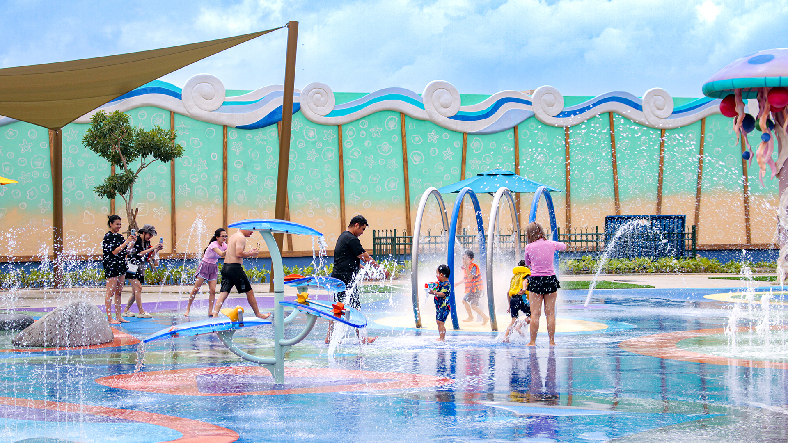
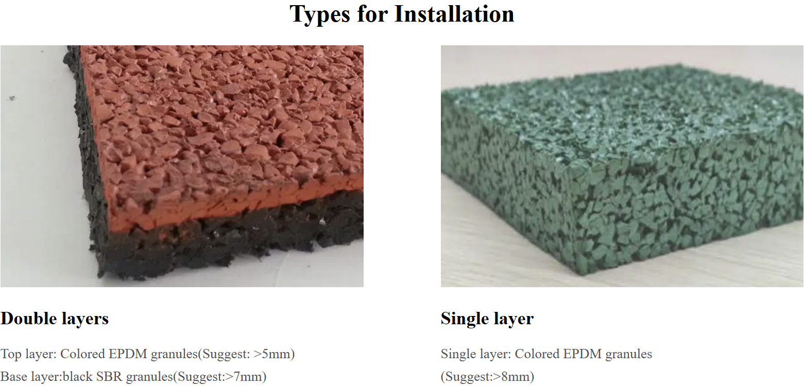
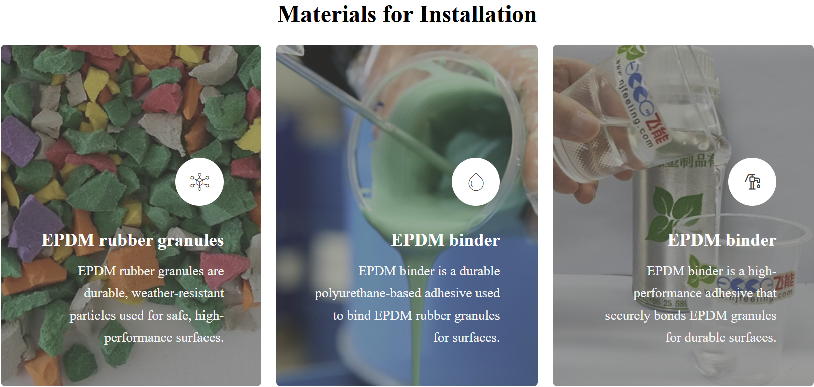
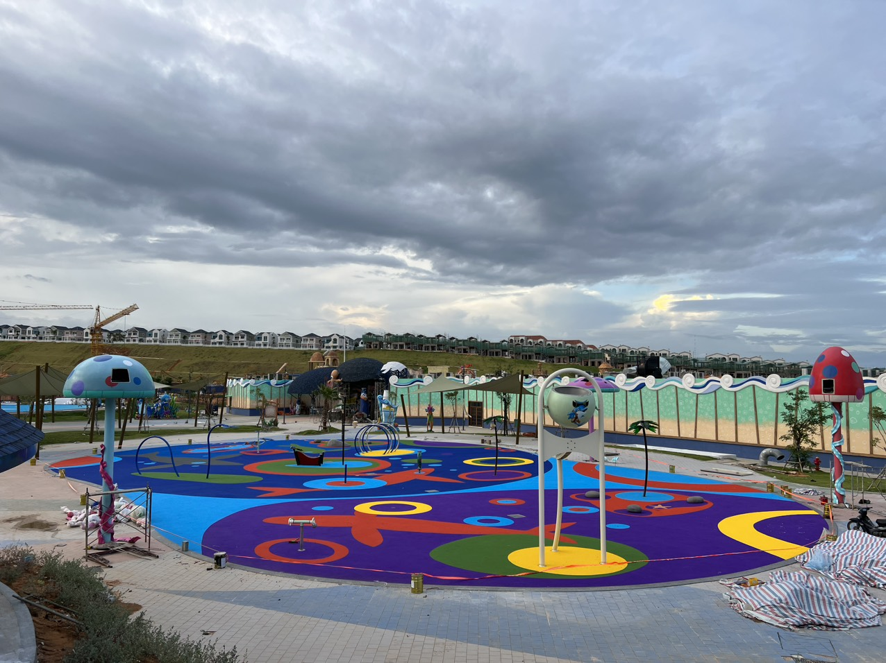
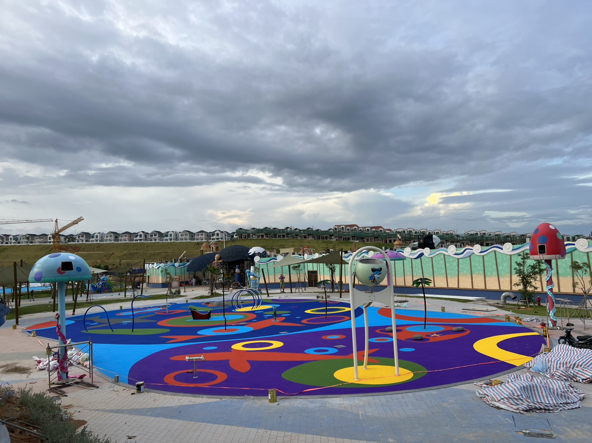
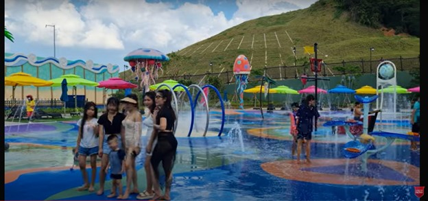

พื้น EPDM สำหรับพื้นที่ใต้น้ำ: เลือกอย่างไรให้เหมาะกับพื้นที่เล่นน้ำ
ผสานสีสัน ความสบายในการใช้งาน และข้อกำหนดของระบบพื้นให้เหมาะกับลานน้ำพุ พื้นรอบสระ และพื้นที่เล่นน้ำ

น้ำช่วยเติมชีวิตชีวาให้พื้นที่เล่น ไม่ว่าจะเป็นลานน้ำพุหรือพื้นที่เล่นน้ำตื้น พื้นที่อยู่ใต้เท้าล้วนมีส่วนต่อรูปลักษณ์ ความรู้สึกขณะใช้งาน และประสิทธิภาพของพื้นที่
พื้นยาง EPDM เปิดโอกาสให้ผสานสีสัน ความสบาย และการออกแบบที่สร้างสรรค์เข้ากับพื้นที่เล่นน้ำ อย่างไรก็ตาม การเลือกพื้น EPDM สำหรับพื้นที่ใต้น้ำไม่ได้ขึ้นอยู่กับสีของเม็ดยางเพียงอย่างเดียว ระบบพื้นทั้งหมดต้องเหมาะกับลักษณะการสัมผัสน้ำ โดยเฉพาะบริเวณที่ต้องแช่อยู่ใต้น้ำอย่างต่อเนื่อง
พื้น EPDM คืออะไร?
EPDM ย่อมาจาก Ethylene Propylene Diene Monomer เป็นยางสังเคราะห์ที่ใช้ในงานพื้นหลายประเภท สำหรับพื้นยางแบบเทในที่ จะนำเม็ดยางสีมาผสมกับสารยึดประสานที่เข้ากันได้ แล้วติดตั้งบนฐานที่เตรียมไว้
ระบบพื้นยางสำหรับพื้นที่เล่นน้ำสามารถออกแบบสำหรับลานน้ำพุ พื้นรอบสระ และโซนเครื่องเล่นน้ำได้ ผู้ผลิตมีระบบที่ใช้เม็ดยาง EPDM หรือ TPV ร่วมกับสารยึดประสานโพลียูรีเทน โดยกำหนดเงื่อนไขด้านคุณภาพน้ำและการใช้งานไว้เฉพาะสำหรับแต่ละระบบ
รูปแบบการติดตั้ง

ระบบสองชั้น
ติดตั้งชั้นผิว EPDM สีบนชั้นฐานยาง SBR สีดำ ผู้ผลิตในแหล่งอ้างอิงแนะนำชั้นผิวหนามากกว่า 5 มม. และชั้นฐานหนามากกว่า 7 มม.
ระบบชั้นเดียว
ติดตั้งชั้นยาง EPDM สีโดยตรงบนฐานที่เตรียมไว้ ผู้ผลิตในแหล่งอ้างอิงแนะนำความหนามากกว่า 8 มม.
วัสดุที่ใช้ในการติดตั้ง

เม็ดยาง EPDM สี ใช้เป็นชั้นผิว สามารถผสมสีและจัดวางเป็นลวดลาย เส้นขอบ หรือรูปแบบตามธีมของพื้นที่เล่นน้ำ
สารยึดประสานโพลียูรีเทน ทำหน้าที่ยึดเม็ดยางให้เป็นพื้นต่อเนื่อง ควรเลือกสูตรที่เหมาะกับระบบบำบัดน้ำและลักษณะการสัมผัสน้ำของโครงการ
วัสดุประกอบอื่น ๆ อาจรวมถึงไพรเมอร์สำหรับพื้นฐานและชั้นฐานยาง SBR ตามข้อกำหนดของระบบ โดยต้องปฏิบัติตามคำแนะนำของผู้ผลิตเรื่องความเข้ากันได้ของวัสดุ อัตราส่วนผสม และระยะเวลาบ่ม
พื้น EPDM ใช้ใต้น้ำได้หรือไม่?
ทางเดินรอบสระสัมผัสน้ำกระเซ็นสลับกับช่วงที่แห้ง ลานน้ำพุสัมผัสน้ำบ่อยครั้ง ส่วนพื้นใต้น้ำสัมผัสน้ำเป็นเวลานานกว่า แต่ละพื้นที่จึงต้องใช้ข้อกำหนดที่เหมาะสมต่างกัน
แม้แต่ผลิตภัณฑ์สำหรับพื้นที่เล่นน้ำโดยเฉพาะก็อาจมีข้อจำกัด เช่น Rubberecycle ระบุว่าไม่แนะนำให้ใช้ AquaBond ในบริเวณที่จมอยู่ใต้น้ำทั้งหมดเป็นเวลานาน
สำหรับงานใต้น้ำ ควรขอการยืนยันเป็นลายลักษณ์อักษรว่าระบบที่ประกอบด้วยเม็ดยาง สารยึดประสาน ไพรเมอร์ และฐานรองรับ เหมาะกับสภาพการแช่น้ำที่กำหนด พร้อมตรวจสอบระบบบำบัดน้ำ อุณหภูมิใช้งาน วิธีทำความสะอาด และเงื่อนไขการรับประกันก่อนเลือกวัสดุ

ทำไมจึงควรพิจารณาพื้น EPDM สำหรับพื้นที่เล่นน้ำ?
ความสบายและพื้นผิวสัมผัส
พื้นยางสามารถให้ความรู้สึกนุ่มสบายขณะเดิน และลักษณะผิวสามารถช่วยเรื่องการยึดเกาะในพื้นที่เปียกได้ ทั้งนี้ ประสิทธิภาพขึ้นอยู่กับระบบที่ติดตั้ง ควรขอผลทดสอบความต้านทานการลื่นในสภาพเปียก และหากต้องการการรองรับแรงกระแทก ควรตรวจสอบผลทดสอบที่ตรงกับความหนาและโครงสร้างพื้นนั้น แหล่งอ้างอิงระบุความยืดหยุ่นและการยึดเกาะในพื้นที่เปียกเป็นประโยชน์ที่เป็นไปได้ของระบบพื้นชนิดนี้
สีสันและการออกแบบ
เม็ดยางสีช่วยสร้างลวดลายและกราฟิกตามธีม ภาพประกอบแสดงการใช้เส้นโค้งและวงกลมสีสดรอบเครื่องเล่น ควรวางแผนลวดลายให้สัมพันธ์กับทางเข้า จุดระบายน้ำ และโซนกิจกรรม เพื่อให้การออกแบบสอดคล้องกับการใช้งาน

การระบายน้ำในลานเล่นน้ำ
พื้นยางแบบเทในที่บางระบบยอมให้น้ำซึมผ่านได้ แต่ฐานรองรับยังต้องมีการออกแบบระบายน้ำที่เหมาะสม ตัวอย่างเช่น ข้อกำหนดพื้น EPDM สำหรับพื้นที่เล่นน้ำของ Fortco กำหนดให้ฐานแอสฟัลต์หรือคอนกรีตมีความลาดเอียง แม้ว่าชั้นผิวจะยอมให้น้ำผ่านได้ก็ตาม
สำหรับพื้นที่ใต้น้ำ ควรแยกข้อกำหนดเรื่องการกักเก็บน้ำออกจากข้อกำหนดของชั้นผิวตกแต่ง ไม่ควรถือว่าพื้น EPDM แบบพรุนทำหน้าที่เป็นระบบกันซึมของสระได้
ทำไมสารยึดประสานจึงสำคัญ?
สารยึดประสานทำหน้าที่ยึดเม็ดยางเข้าด้วยกัน งานพื้นที่เล่นน้ำอาจต้องใช้สูตรที่ออกแบบมาสำหรับน้ำที่ผ่านการบำบัด เช่น Polycoat มีสารยึดประสานอะลิฟาติกที่ทนต่อคลอรีนสำหรับบริเวณสระว่ายน้ำและสวนน้ำ อย่างไรก็ตาม ต้องตรวจสอบเพิ่มเติมว่าผลิตภัณฑ์นั้นเหมาะกับเงื่อนไขการแช่ใต้น้ำของโครงการจริงหรือไม่
สิ่งที่ควรวางแผนก่อนเริ่มโครงการ
- ลักษณะการสัมผัสน้ำ: ระบุว่าเป็นน้ำกระเซ็นเป็นครั้งคราว เปียกสลับแห้ง หรือแช่น้ำอย่างต่อเนื่อง
- การบำบัดน้ำ: ยืนยันชนิดสารฆ่าเชื้อ ความเข้มข้น และผลิตภัณฑ์ทำความสะอาด
- ฐานและรายละเอียดรอยต่อ: วางแผนจุดเชื่อมกับท่อระบายน้ำ อุปกรณ์ ขอบพื้น และรอยต่อเผื่อการเคลื่อนตัว
- ประสิทธิภาพ: ขอข้อมูลที่เกี่ยวข้องกับการยึดเกาะในสภาพเปียก การยึดติดกับฐาน และการรองรับแรงกระแทกหากจำเป็น
- การส่งมอบ: ยืนยันระยะเวลาบ่มก่อนเติมน้ำ วิธีบำรุงรักษา และเงื่อนไขการรับประกัน
ควรตรวจสอบแผ่นตัวอย่างเพื่อประเมินสีและผิวสัมผัสสำหรับการเดินเท้าเปล่าก่อนอนุมัติการติดตั้ง

การดูแลรักษาพื้นหลังติดตั้ง
ขอคำแนะนำการทำความสะอาด รายการผลิตภัณฑ์ที่อนุญาตให้ใช้ และตารางตรวจสอบจากผู้ผลิต วางแผนเก็บเศษสิ่งสกปรก จัดพื้นที่ให้เข้าถึงเพื่อทำความสะอาด บันทึกคุณภาพน้ำ และตรวจหาเม็ดยางหลุด ขอบยกตัว หรือความเสียหายเฉพาะจุด พร้อมยืนยันวิธีซ่อมและระยะเวลาที่ต้องปิดใช้งานหลังซ่อม
เริ่มต้นโครงการพื้นที่เล่นน้ำกับ HKS Surfaces
พื้นสำหรับพื้นที่เล่นน้ำที่ดีเริ่มจากการออกแบบอย่างรอบคอบและเลือกระบบให้เหมาะกับสภาพแวดล้อม
ติดต่อ HKS Surfaces เพื่อพูดคุยเกี่ยวกับโครงการ แนวคิดการออกแบบ และข้อกำหนดของพื้น พร้อมระบุว่าพื้นจะเปียกเป็นช่วง ๆ หรือแช่อยู่ใต้น้ำอย่างต่อเนื่อง เพื่อประเมินความเหมาะสมตั้งแต่เริ่มต้น